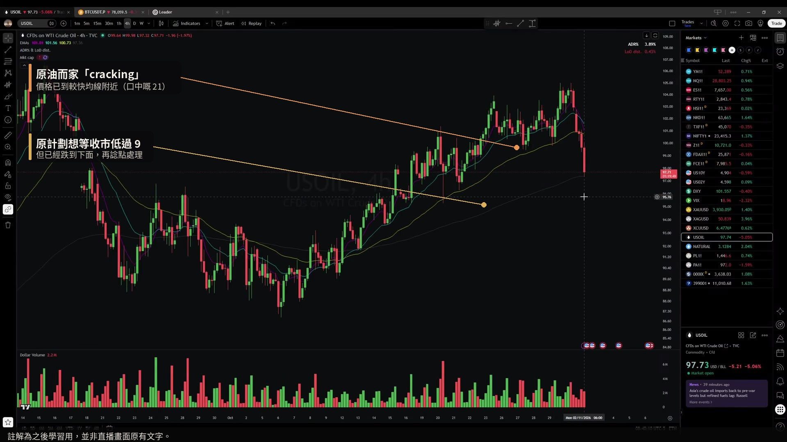
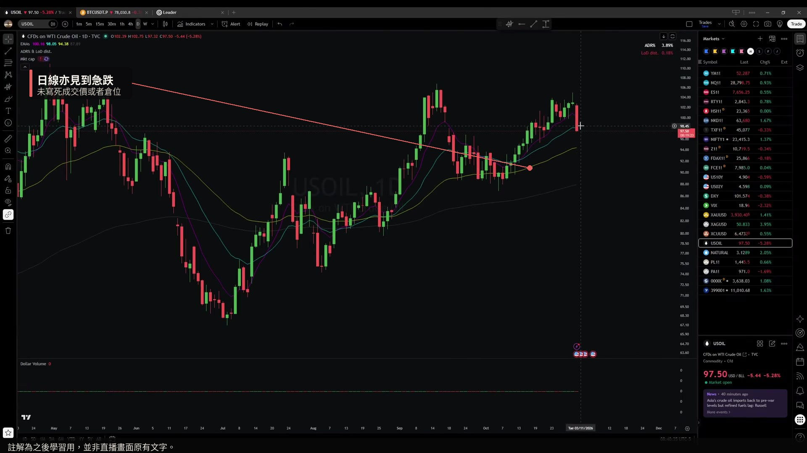
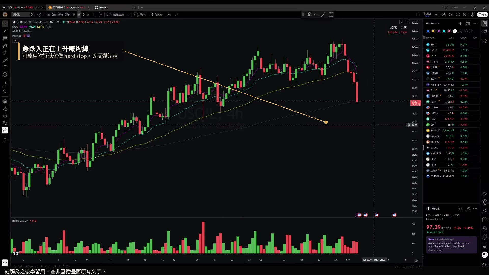

概要
急跌之後，唔想追住低位賣出
28:28 開始，畫面轉到原油（USOIL）。佢話今日「cracking」，打算處理；價格而家到咗 21。原計劃係等收市低過 9，但已經跌到下面。除非再直下，否則唔想即刻在呢個位置賣；或會用附近低位做 hard stop，若再跌或要離場。當時只係急跌入正在上升嘅均線，所以想等反彈再走。末段亦提到黃金反彈頗強，但本頁只拆原油呢段。
圖一 · 主圖
原油急跌，已到較快均線附近
直播 28:30

原話
Oh, it was cracking today. Probably, yeah, probably going to take it out. Let me take it off. This is, it's going, it's now at the 21. Like my plan is to trying to wait for the close below the nine, but right now it's already like down here.
噢，今日裂開咗。可能，係呀，可能會處理掉。我嚟減／平一啲。而家到咗 21。我嘅計劃本來係等收市低過 9，但而家已經跌到下面。
點樣讀
執行同計劃不一致時，佢會講出嚟：想等收市低過 9，但價格已經更低，就要改諗點離場。
圖例冇印 9 或者 21。註解只跟口中講法同均線位置，唔寫死週期。亦睇唔到成交價。
圖二
日線同樣見到急跌
直播 28:55

原話
Like my plan is to trying to wait for the close below the nine, but right now it's already like down here.
我嘅計劃本來係等收市低過 9，但而家已經跌到下面。
點樣讀
日線用來對一下大方向，真正講 hard stop 同等反彈，主要仍在 4 小時圖。
圖三
急跌入上升均線，等反彈再走
直播 29:50

原話
Yeah, but I'm not going to sell it like right now, unless it's just going straight down. I don't know, maybe I would use this low or this low as a hard stop. If it's going further down then I may need to exit the position. But right now it's just flushing into the rising EMAs. So I'm going to wait for the bounce to this out. Gold is also coming back pretty strong.
不過我唔會而家即刻賣，除非係直直跌。或者我會用呢個低位、或者呢個低位做 hard stop。若再跌，或要離場。但而家只係急跌入正在上升嘅均線，所以我會等反彈再走。黃金都反彈得頗強。
點樣讀
急跌入上升均線，佢選擇等反彈，而唔係追賣。hard stop 只係指住圖上嘅低位構想，畫面冇標出價，本站亦唔補價。
黃金一句只係帶過，唔把本頁寫成金嘅科目；金銀稍後另有一科。
附註
注意事項
- 畫面係 USOIL（WTI 原油 CFD），口中亦叫 oil。唔寫死成交價、倉位或者損益。
- 圖例冇印均線週期。9 同 21 係口中講法。